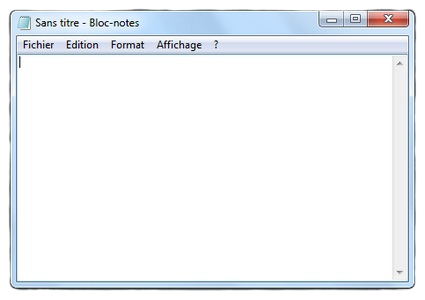

Description
Le Bloc-notes est un éditeur de texte livré avec toutes les versions de Microsoft Windows depuis 1985.
Le Bloc-notes est l'éditeur de texte par défaut de Windows pour afficher le code source des pages HTML dans Internet Explorer, Firefox ou Chrome.
Les fichiers texte sous Windows sont généralement associés à l'extension .txt. Parmi les autres formats s'ouvrant directement dans le Bloc-notes, on trouve les fichiers de configuration d'extension .ini, les feuilles de style .css, les données d'information .nfo et les fichiers de commandes (.bat pour DOS, .cmd pour Windows NT).
On peut aussi associer l'extension du fichier au Bloc-notes, afin que tous les fichiers du même type soient par la suite ouverts dans cette application.
Avantages et inconvénients
Le Bloc-notes ne permet pas d'éditer convenablement les fichiers texte en provenance de systèmes Unix ou Mac : il s'agit principalement de problèmes d'encodage des retours à la ligne. En effet, ceux-ci sont codés sous Windows par CR/LF, c'est-à-dire l'association des caractères ASCII 13 (CR pour Carriage Return, retour chariot) et 10 (LF pour Line Feed, saut de ligne). Les systèmes Unix n'utilisent quant à eux que le caractère ASCII 10 (LF), tandis que les systèmes Mac utilisaient uniquement le caractère 13 (CR). En pratique, lorsqu'un fichier provenant d'un tel système est ouvert dans le Bloc-notes, toutes les lignes sont accolées et le retour à la ligne est remplacé par un caractère ressemblant à un petit carré, ce qui rend le texte très difficile à lire. Il serait très simple pour Microsoft d'éviter ce désagrément : nombre d'éditeurs de texte scannent le début d'un fichier à la recherche des caractères CRLF, CR ou LF, en déduisent le format utilisé et l'affichent correctement dans tous les cas. Pour les détracteurs de Microsoft, c'est un exemple trivial du fait que l'éditeur ne vise absolument pas l'interopérabilité avec les autres systèmes, mais à rendre ses utilisateurs dépendants de ses outils et formats propriétaires (dans ce cas précis, les formats Mac et Unix ne fonctionnant pas avec l'éditeur standard de Windows, Microsoft impose son format pour les échanges avec ces systèmes, cependant Wordpad est capable de fonctionner avec les autres formats).
Dans les versions les plus anciennes (incluses dans Windows 95, Windows 98, Windows ME et Windows 3.1), la police utilisée est Fixedsys. La taille du fichier ouvert est limitée à 64 ko et la plupart des raccourcis clavier classiques ne fonctionnent pas. Seuls les fichiers texte 8-bits peuvent y être édités.
Dans les versions du Bloc-notes fournies avec Windows NT, les raccourcis clavier courants fonctionnent et les limitations de taille ont disparu. Le programme peut également éditer des fichiers texte utilisant les formats Unicode (UTF-8 et UTF-16). La police utilisée par défaut a par conséquent été remplacée par une police Unicode, Lucida Console.
Pour des tâches d'édition de code, notamment HTML, il sera avantageusement remplacé par d'autres logiciels proposant des fonctions de coloration syntaxique. Le Bloc-notes conserve cependant un avantage sur beaucoup d'autres éditeurs : il ne bloque pas le fichier édité. Il est donc possible de travailler sur un fichier dans le Bloc-notes tout en l'ouvrant avec un autre programme.
L'avis de la rédac'
L'outil de base, rapide et facile à maîtriser.Comment l'obtenir ?
Cet éditeur de texte est déjà installé sur les ordinateurs disposant d'une version de Windows.